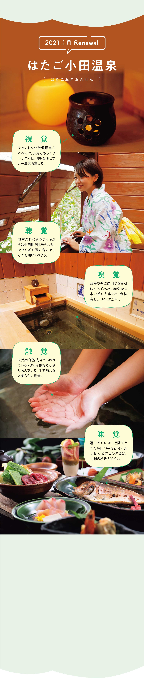
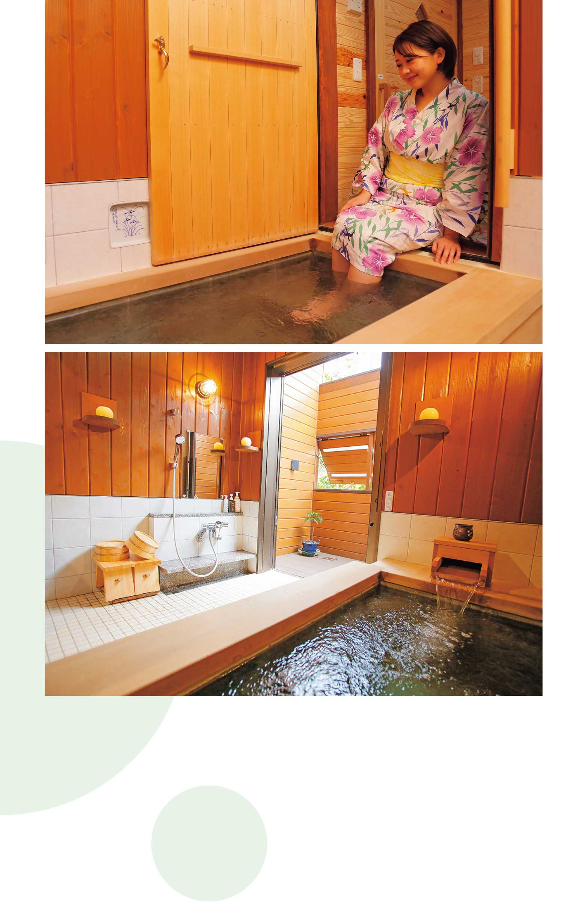
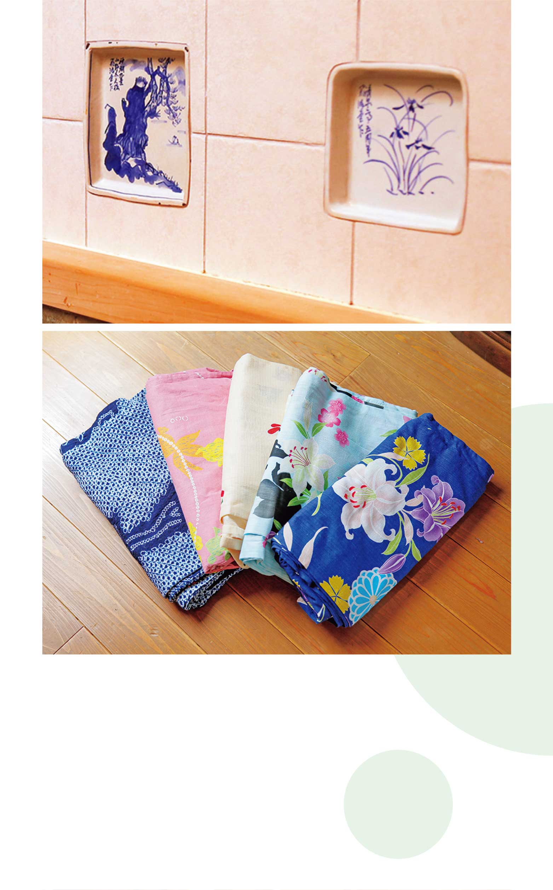
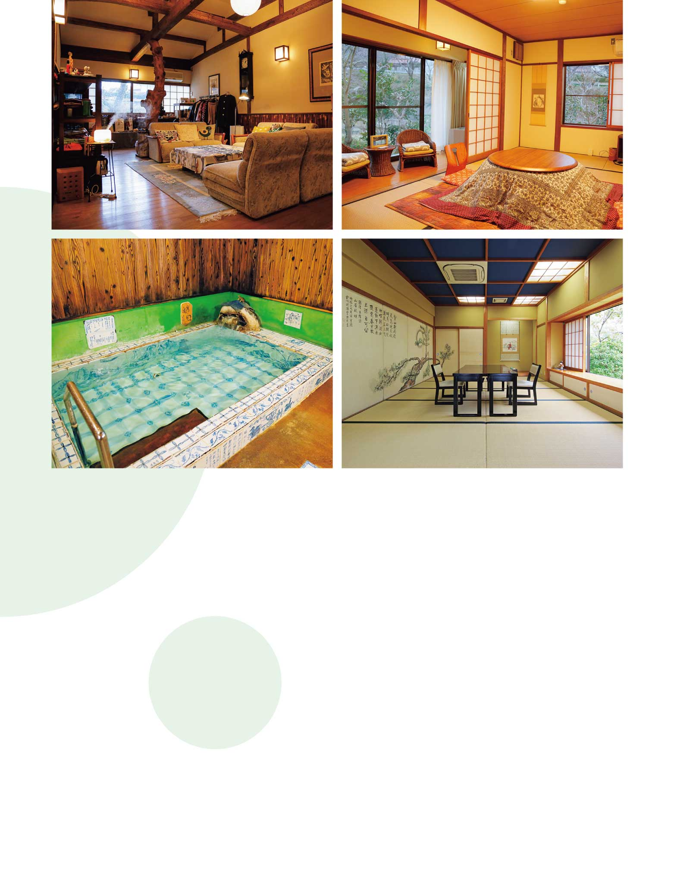
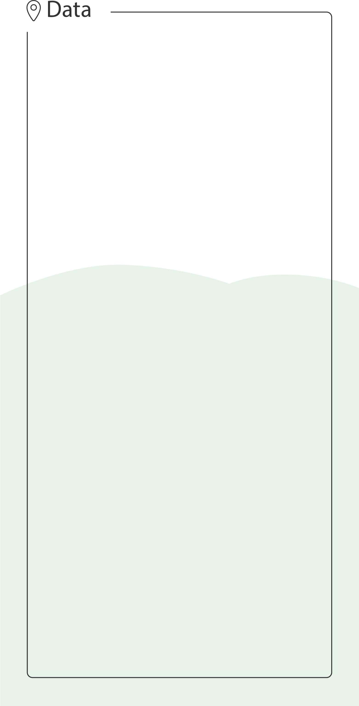
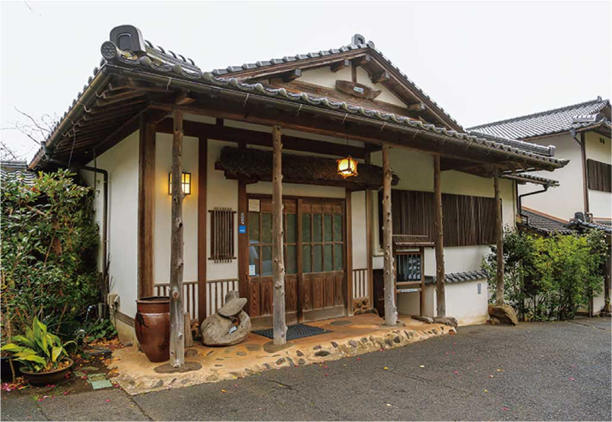

SHOPS
-
 〝五感の開放〟がテーマの貸切風呂で
ココロを解き放つ時間を昨年、創業１００周年を迎えた記念として誕生したのが、貸切風呂「豊玉の湯」だ。コンセプトは〝五感の開放〟。ホッと安らぐヒノキの香りを感じつつ柔らかな湯ざわりの温泉につかり、キャンドルの炎を見つめたり、デッキに出て川のせせらぎや風の音に耳を傾けたり…。夕食時には、四季折々の海山の幸を生かした会席料理を堪能して 、 味覚にも喜びを 。見て、聞いて、香って、触れて、味わって…と五感を研ぎ澄ませながら、心を自由に解き放つひとときを過ごして。
-
 上／脱衣所から浴室の扉を開けると、服を着用したまま
足湯としても使用することが可能だ。 下／シャンプーやボディーソープといったアメニティーは、体に優しいものを用意している。 -
 上／浴室を飾るのは、芸術に造詣が深い先代がデザインした手製のタイル。下／無料の浴衣のほかに、1,000円で色・柄付きの浴衣（写真）の貸し出しも行われているので、自分好みの華やかな一着を選んでみてはいかが。
-
 左上／素足でフローリングを踏む心地良さが感じられるよう、ロビーは裸足を推奨。 右上／中央のコタツが愛らしい客室「菊の間」。女性の一人客から人気を集めている。 左下／貸切風呂のほか、趣が異なる２つの風呂が用意され、男女日替わりで利用できる。写真は、白磁に藍の絵付けが美しい「飛天の泉」。 右下／食事処の『茶寮 清泉亭』。要予約で日帰りの食事も提供する。
-
 はたご小田温泉 ［はたごおだおんせん］
- 島根県出雲市多伎町小田208-3
- 0853-86-2016
-
日帰り休憩／11：00～15：00
17：00～19：00（L.O.）宿泊／チェック
イン16：00、チェックアウト10：00 -
日帰り休憩／5,500円～（利用は2名以上）
宿泊／1泊2食付22,000円～（2名1室利用
の場合） 、貸切風呂／50分2,500円
（利用料込みの宿泊プランもあり） - 水
- 8台
低張性中性冷鉱泉
-